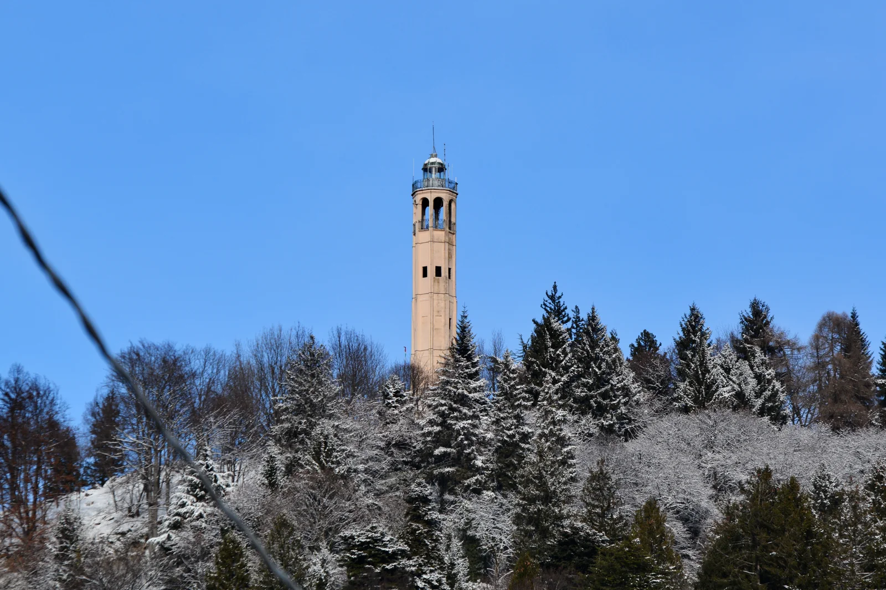
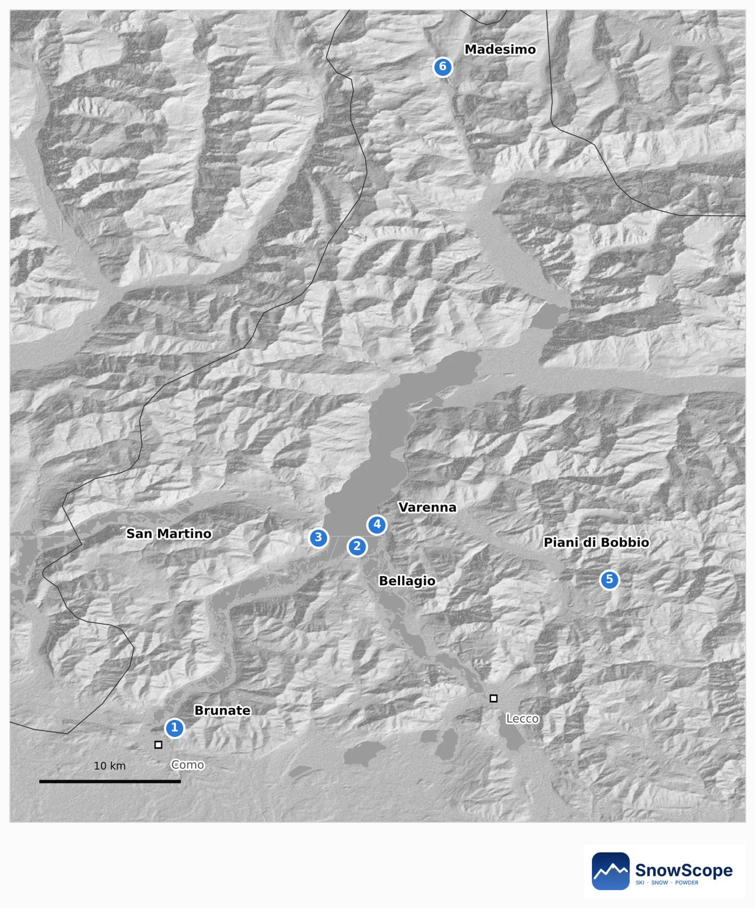
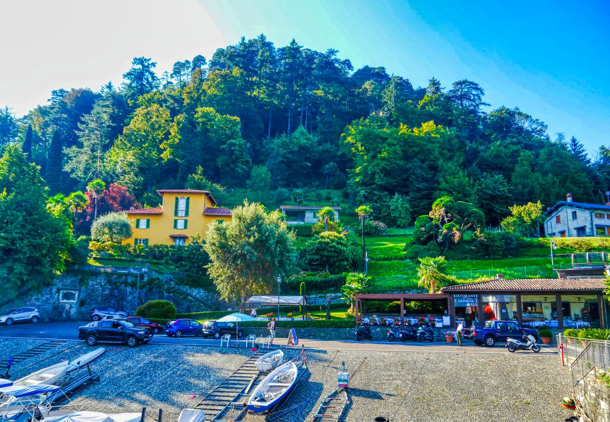
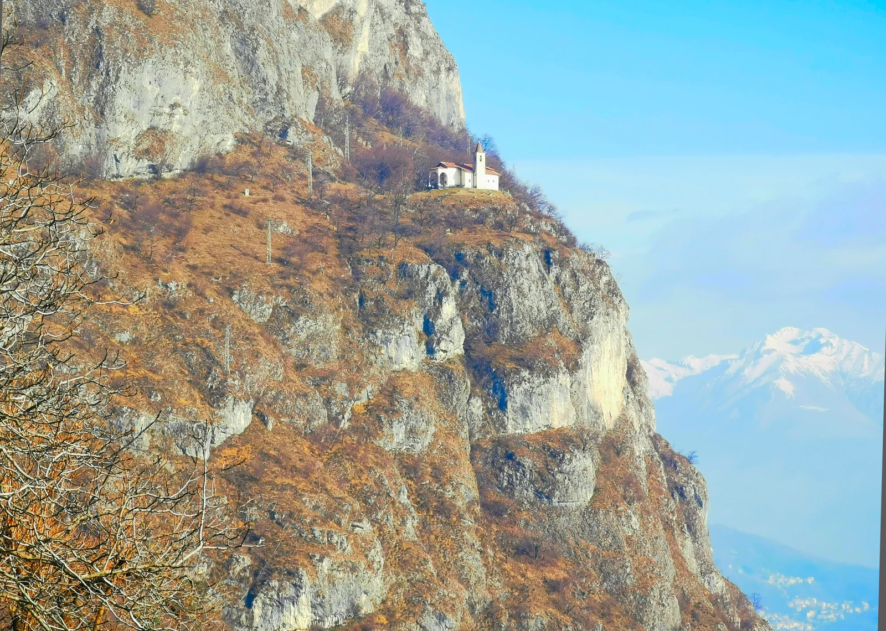
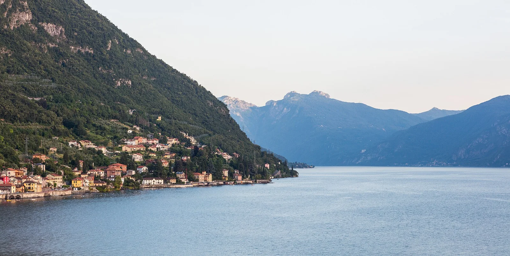
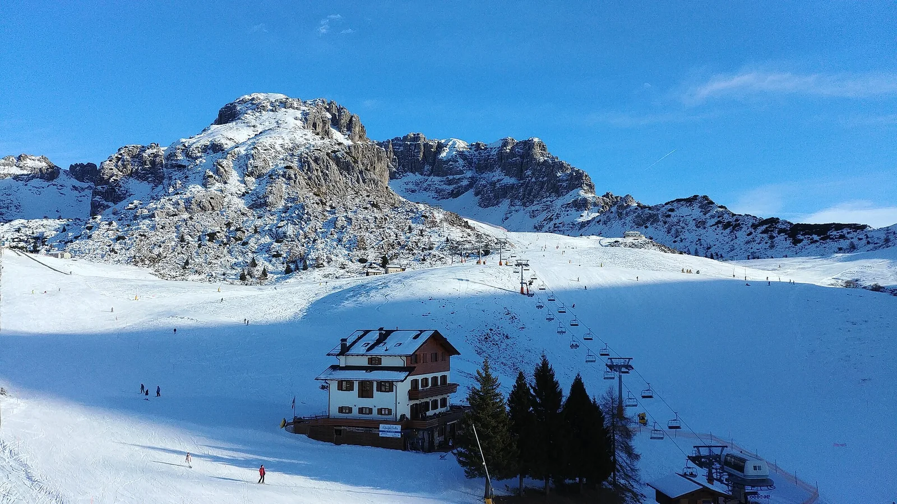
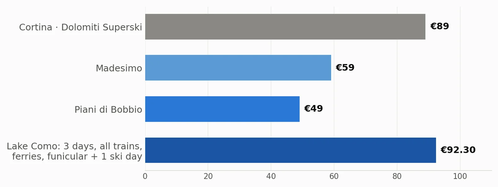
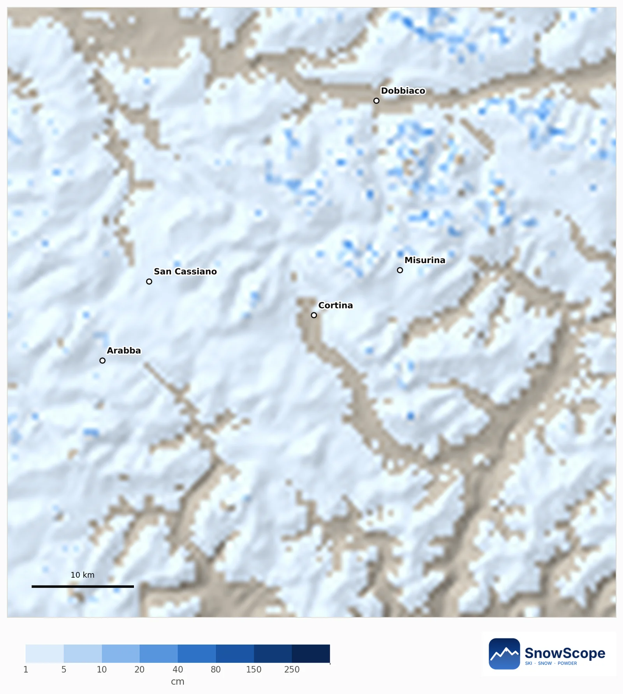
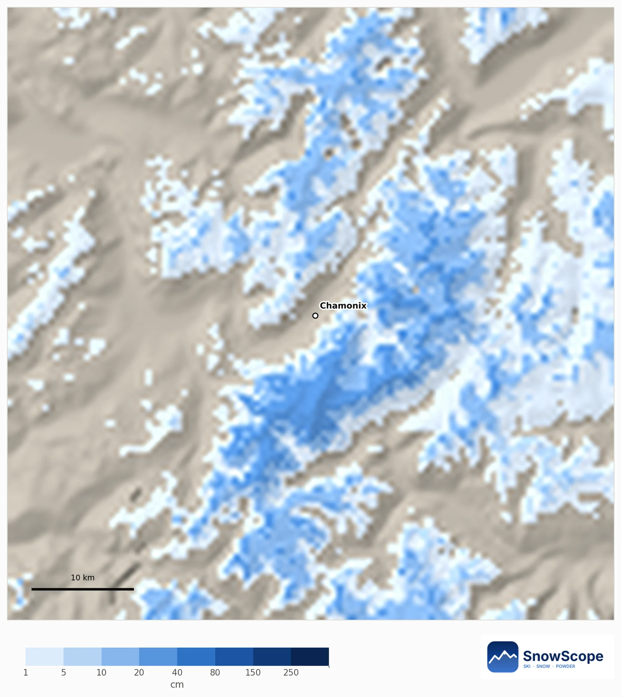

بحيرة كومو فدجنبر بميزانية صغيرة: 3 أيام، نهار فالتلج و40 أورو موفرة فكل نهار تزلج
فدجنبر بحيرة كومو هادية، رخيصة والتلج على بعد ساعة. البرنامج ديالنا ديال 3 أيام كيكلف 92.30 أورو لكاع الترينوات، البابورات، الفونيكولير ونهار ديال التزلج، تقريبا نفس الثمن ديال تذكرة تزلج ديال نهار واحد فكورتينا فالعيد (89 أورو).
شوف توقعات التلج مباشرة ديال Lake Como فالتطبيق ديال SnowScopeالعلو ديال التلج، التنبيهات والخريطة 3D، فابور.
البرنامج فخريطة وحدة
ستة ديال المحطات: Brunate فوق كومو (1)، Bellagio (2)، San Martino فوق Griante (3)، Varenna (4)، وجوج ديال الاختيارات للتلج، Piani di Bobbio (5) و Madesimo (6). كاع الأثمنة هي التعريفات ديال 2026-27 اللي نشروهم الشركات. المبيت والماكلة ماشي فالمجموع حيت ما لقيناش أثمنة رسمية، زيدهم بوحدك.

النهار 1: كومو والبالكون ديال Brunate
خود الترينو الجهوي من Milano Centrale ل Como San Giovanni (5.40 أورو، تقريبا 40 دقيقة). من حدا البحيرة الفونيكولير كيطلع ل Brunate (7.20 أورو مشي ورجوع)؛ طلع على رجليك حتى للمنارة Faro Voltiano باش تشوف البحيرة حتى للألب، غالبا بيضين فدجنبر.
فالعشية البابور من كومو ل Bellagio كيكلف 12 أورو. فالشتا البابورات قلال بزاف، داكشي علاش شوف التوقيت ديال الشتا النهار اللي قبل.
النهار 2: الوسط ديال البحيرة بالبابور
بدا من Punta Spartivento، الراس ديال Bellagio فين كيتلاقاو تلاتة ديال الدراعات ديال البحيرة: فابور. من بعد جوج ديال العبورات، Bellagio-Menaggio و Menaggio-Varenna، ب 5.50 أورو للوحدة. البطاقة ديال النهار للوسط ديال البحيرة كتكلف 17.50 أورو وما كتسواش غير من العبور الرابع.
فوق Cadenabbia كاين طريق طالع بزاف للكنيسة الصغيرة San Martino فوق الصخرة، من أحسن المناظر الفابور ديال البحيرة. سالي ف Varenna بالتمشية حدا الما؛ القصر ديال Vezio فوق القرية كيتحل غير شي أيام فالشتا، شوف قبل ما تطلع.



النهار 3: نهار فالتلج
من Lecco كاين طوبيس طالع ل Barzio، فين التيليفيريك ل Piani di Bobbio داخل فتذكرة التزلج: 49 أورو للنهار فالموسم العالي (السبت والحد، 7-8 دجنبر ومن 26 دجنبر حتى ل 6 يناير) و41 أورو فالأيام الأخرى.
Madesimo، أعلى وأكبر، كتوصل ليها بالطوبيس من Chiavenna: 59 أورو فالموسم العالي، ولكن 41 أورو قبل العيد، من 9 حتى ل 24 دجنبر. الترينو ديال الرجوع من Varenna لميلانو كيكلف 7.70 أورو. الترينو ل Lecco والطوبيسات ديال الجبل ماشي فالمجموع ديالنا.

شحال كتوفر
كاع الترينوات، البابورات والفونيكولير ديال هاد البرنامج كيكلفو 43.30 أورو؛ مع نهار تزلج ف Bobbio فالموسم العالي المجموع 92.30 أورو، ولا 84.30 أورو فنهار ديال الموسم المنخفض. تذكرة نهار Dolomiti Superski لكورتينا كتكلف 89 أورو فالعيد.
فكل نهار تزلج، Bobbio أرخص من كورتينا ب 40 أورو (45%) و Madesimo أرخص ب 30 أورو (34%). فتلاتة ديال الأيام ديال التزلج فالعيد، هادي 267 أورو فكورتينا مقابل 147 أورو ف Bobbio: 120 أورو موفرة غير فالتذاكر. المبيت والماكلة ماشي مقارنين هنا.

واش غيكون التلج فالعيد؟
اليوم Piani di Bobbio فيها 2 سنتيمتر فالقمة (1860 متر) من بعد 14 سنتيمتر فالسيمانة اللي فاتت، و Madesimo فيها 1 سنتيمتر فالوسط. لدجنبر التوقع الموسمي الأوروبي هنا سخون ب 1.6 درجة كثر من العادة، والشتا 12% كثر.
فالوسط ديال Piani di Bobbio (1595 متر)، 41 من 45 شتوة اللي فاتو كان فيهم على الأقل 5 سنتيمتر ديال التلج نهار 25 دجنبر. مع التوقع ديال هاد العام الحظ باقي 91%، مع تقريبا 17 سنتيمتر داك النهار بلاصة 22 سنتيمتر العادية. Madesimo (1885 متر) أضمن: 44 من 45 شتوة، 99% هاد العام، تقريبا 33 سنتيمتر. الحظ باش يكون دجنبر فيه التلج كثر من العادة 38% ف Bobbio و41% ف Madesimo: ما كاينش إشارة واضحة.
نصايح للي كيتزلجو
- شري تذاكر البابور وحدة بوحدة، إلا ما كنتيش غادي تعبر ربعة ديال المرات ولا كثر.
- تزلج ف Madesimo قبل العيد، من 9 حتى ل 24 دجنبر، بثمن بداية الموسم.
- شوف التوقيت ديال الشتا ديال البابورات والخريطة ديال التلج ديال SnowScope النهار اللي قبل.
المراجع والمصادر
- Trenord, Milano Centrale - Como S. Giovanni route (fare and journey time), retrieved 2026-11-10 www.trenord.it/en/routes-and-timetables/most-searched-lines/milano-centrale-como-s-giovanni-route/
- Trenord fare table from 1 September 2026 (Milano - Varenna-Esino band), retrieved 2026-11-10 www.trenord.it/fileadmin/contenuti/TRENORD/4-Info_e_assistenza/Informazioni_utili/Condizioni_di_trasporto/Condizioni_di_trasporto_IN_VIGORE/AvvisoA4Trenord_2026_179_Tariffario.pdf
- Navigazione Laghi, Lake Como fares from 1 April 2026, retrieved 2026-11-10 www.navigazionelaghi.it/wp-content/uploads/2026/03/NLC_Tariffe-A4_042026_CT012018_Ita.pdf
- ATM, Como - Brunate funicular fares, retrieved 2026-11-10 www.atm.it/it/AltriServizi/Trasporto/Documents/Tariffe%20Funicolare%20Como%20Brunate.pdf
- Piani di Bobbio, ski pass prices and seasons 2026-27, retrieved 2026-11-10 pianidibobbio.com/en/price-times/barzio-piani-di-bobbio
- Skiarea Valchiavenna (Madesimo), ski pass prices 2026-27, retrieved 2026-11-10 www.skiareavalchiavenna.it/en/prices/
- DoveSciare, Dolomiti Superski ski pass prices for winter 2026-2027 (2 October 2026) www.dovesciare.it/news/2026-10-02/dolomiti-superski-ecco-i-prezzi-degli-skipass-linverno-20262027
على هاد الأرقام
الأثمنة: التعريفات ديال 2026-27 اللي نشروهم الشركات (شوف المراجع)، للكبار، الدرجة التانية، تشافو نهار 10 نونبر 2026؛ الثمن ديال كورتينا من الصحافة على اللائحة ديال Dolomiti Superski. المجاميع والتوفير: الحسابات ديالنا. التلج: الخريطة ديال SnowScope والتوقع ديالنا لدجنبر.
كيفاش تستاشهد بهاد المقال
للبحث، التعليم ولا الصحافة: الأرقام والرسومات تقدر تعاود تخدم بيهم بحرية تحت CC BY 4.0 مع هاد الاستشهاد.
SnowScope (2026), بحيرة كومو فدجنبر بميزانية صغيرة: 3 أيام، نهار فالتلج و40 أورو موفرة فكل نهار تزلج, https://snowscope.app/blog/ar/2026/11/lake-como-december-budget-trip-snow-christmas-2026.html, تشاف ف 2026-11-10
SnowScope (Atlas Labs). (2026, November 10). بحيرة كومو فدجنبر بميزانية صغيرة: 3 أيام، نهار فالتلج و40 أورو موفرة فكل نهار تزلج. SnowScope snow reports. https://snowscope.app/blog/ar/2026/11/lake-como-december-budget-trip-snow-christmas-2026.html
BibTeX
@misc{snowscope2026lakecomodecemberbudgettr,
author = {{SnowScope (Atlas Labs)}},
title = {بحيرة كومو فدجنبر بميزانية صغيرة: 3 أيام، نهار فالتلج و40 أورو موفرة فكل نهار تزلج},
year = {2026},
month = nov,
howpublished = {\url{https://snowscope.app/blog/ar/2026/11/lake-como-december-budget-trip-snow-christmas-2026.html}},
note = {Published 2026-11-10 12:31 UTC; accessed 2026-11-10}
}· CC BY 4.0 · الطريقة، الداتا والأدوات →
تابع Lake Como
فابور: ميساج ملي يجي التلج، والتوقعات كل صباح.
تقارير أخرى ديال التلج

التلج ديال اليوم فكورتينا، التوقع الموسمي الأوروبي لدجنبر، والحظوظ ديالنا باش يكون نهار 25 دجنبر أبيض فالدولوميت الشرقية.

التلج ديال اليوم ف Grands Montets، التوقع الموسمي الأوروبي لدجنبر، والخريطة ديالنا فين غيكون التلج كثر ولا قل حدا مون بلان.

Davos و Klosters كيتقاسمو ستة ديال الجبال ديال التزلج. برنامج نهار بنهار، كيبدا ب Parsenn، مع شنو كيقول التاريخ ديال التلج ديالنا ف 46 شتوة اللي فاتت على العلوات ديالو.